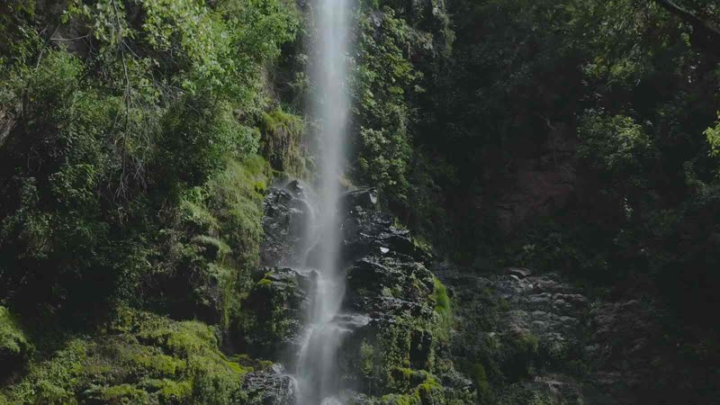
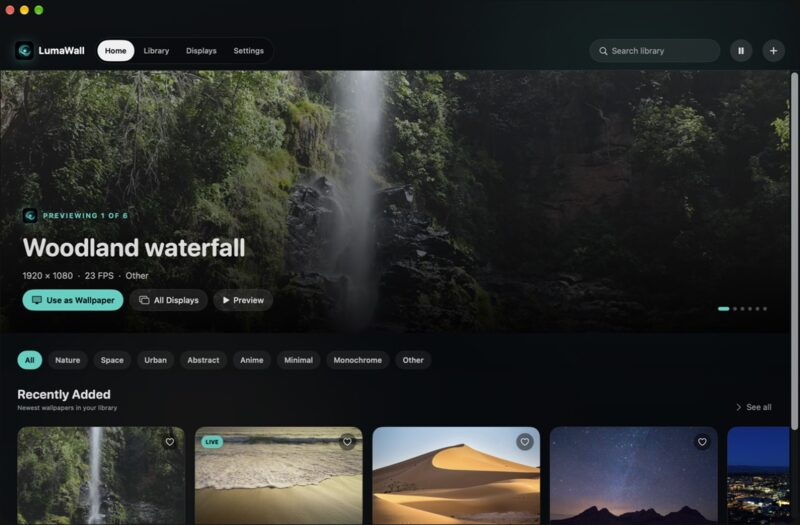
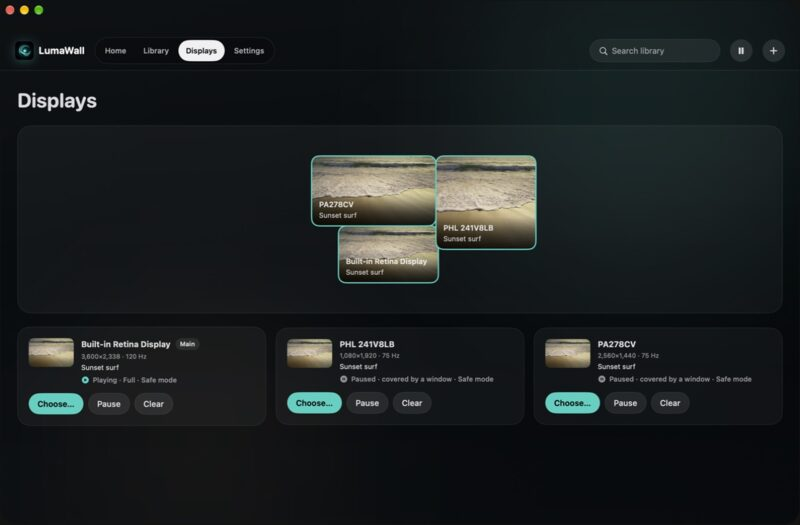
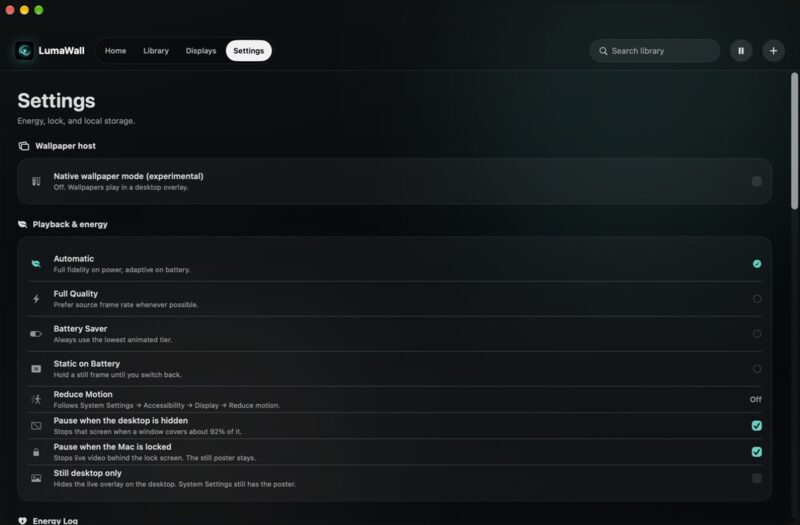

Your videos as live Mac wallpapers.
Free and open source. Works offline with no account or analytics.


Any loop becomes the view.
Import MP4 or MOV files and set them as your wallpaper. Hover or tap a loop to play it.
Sample loops for illustration. LumaWall plays the videos you import.
One window for every wallpaper.
Pick a loop, choose a display and a mode, and LumaWall does the rest.


Screenshots from LumaWall on macOS 27, with the sample loops imported.
Built for every Mac setup.
-
Safe mode by default
On macOS 15 or later, Safe mode plays muted video in a desktop overlay above a still poster. It uses documented macOS APIs and leaves system wallpaper files alone.
-
Native mode on macOS 26 or later
Opt in for desktop and lock screen wallpapers, at your own risk. It uses undocumented interfaces, edits system wallpaper settings and restarts WallpaperAgent. If an assignment fails, LumaWall falls back to Safe mode, and Restore original wallpaper brings back your settings from a local backup.
-
Every display
Use the same video everywhere or set one per display, including portrait displays.
-
Playlists and schedules
Schedule a playlist, or switch between two videos by time of day or macOS appearance.
-
720p playback on battery
On battery, LumaWall can switch to a 720p copy of your video.
-
Pauses when nothing can see it
Playback pauses when displays sleep or Game Mode is active. Settings also let you pause on covered displays or when your Mac locks. Reduce Motion shows a still frame.
Stops drawing when you can't see it.
Drag the window over the wallpaper and watch the simulated power reading drop. The demo stops drawing frames at 97% coverage. LumaWall uses its own coverage threshold.
- Frames per second
- 60
- Simulated LumaWall power
- 12 mW
- Covered
- 0%
Playing
Drag the window, or focus it and use the arrow keys.
Reduced motion is on. The wallpaper stays still while the demo simulates playback.
About 1 mW paused
Approximate power for LumaWall's own processes on one M-series MacBook with one video wallpaper. Playback used about 7 to 12 mW.
Nothing leaves your Mac.
The app and wallpaper extension send no data. Checking for updates opens GitHub Releases in your browser.
-
Sandboxed video inspection
A sandboxed helper inspects imported videos through read-only file handles opened by the app.
-
Open source
The source is available under the Apache 2.0 license.
Build from source.
A signed, notarized download is unavailable. The repository has build instructions.
- Safe mode
- macOS 15 or later
- Native mode
- macOS 26 or later
- Videos
- MP4 or MOV, audio removed on import